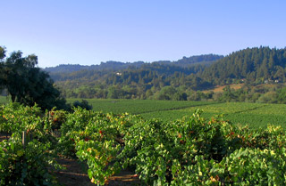

Where the Wyldthingz are...
About the Cattery
Wyldthingz breeding Savannahs are carefully selected for breed type, pedigree, temperament, color intensity, and how each cross can better the breed.
None of our breeding stock is purchased from large Savannah cat "mills" but from small careful catteries with the same integrity of values and purpose in mind for the savannah cat.
We strive toward health and show standard with an aim to develop the best quality companion or show prospect.
Our kittens are raised inside our home and handled daily, played with and exposed to dogs and children. On the other hand, the kittens are not allowed to have free run of the house until they show to have good litter box habits. Wyldthingz savannah kittens should come to you well adjusted, playful, and eager for attention, with excellent litter habits.
Our breeding males are kept in the house as kittens until they are around breeding age (and consequently marking their territory). At that point, they have roomy outdoor cages with warm fuzzy beds, hammocks, and toys.
 Wyldthingz cats have an added advantage of having a large outdoor enclosure. Some of the girls get free run of the house and enclosure shared with the dogs and Chilly, my daughter's Siberian cat. The boys are allowed time outside their pens for at least a hour to stretch their legs and just be a cat. Our cats can watch birds in the trees, the jackrabbits in the meadow beyond, chase bugs and butterflies, or practice stalking through the grass like their wild serval heritage - in safety.
 The cats get to eat a high quality diet which includes, a premium
quality grain-free dry food, ground raw chicken, canned food and
whole prey.
The cats get to eat a high quality diet which includes, a premium
quality grain-free dry food, ground raw chicken, canned food and
whole prey.
They have as normal a pet life as possible and are treated as part of the family.
Inside Wyldthingz on the Outside...